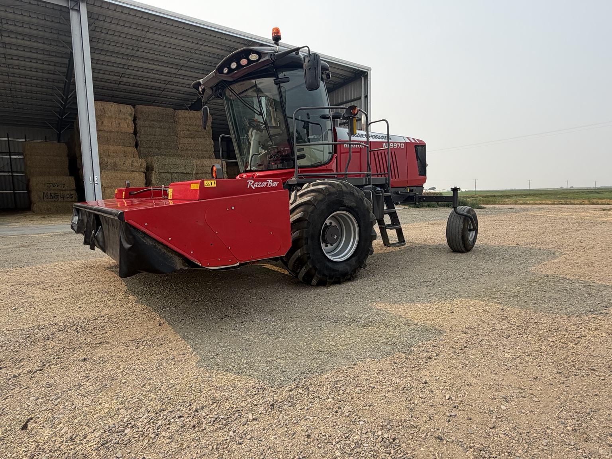

Description
Low-hour WR9970
2021 Massey Ferguson WR9970 self-propelled windrower with TwinMax 9316D header.
- 484 engine hours
- 379 cutting hours
- TwinMax 9316D header
- John Deere screen with RTK GPS
- RazorBar disc cutterbar
Located in Cranford, Alberta. Contact VanRed Enterprises for more information or hauling options.